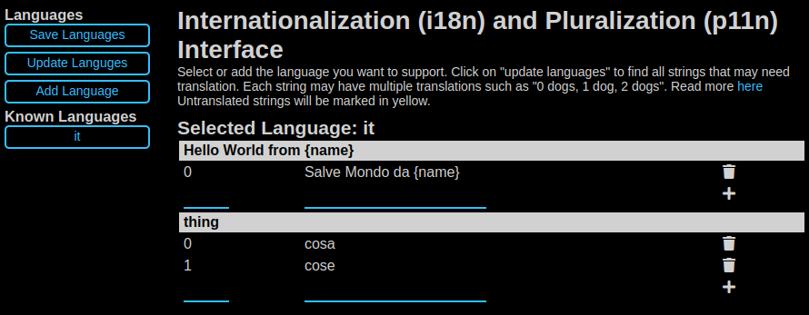
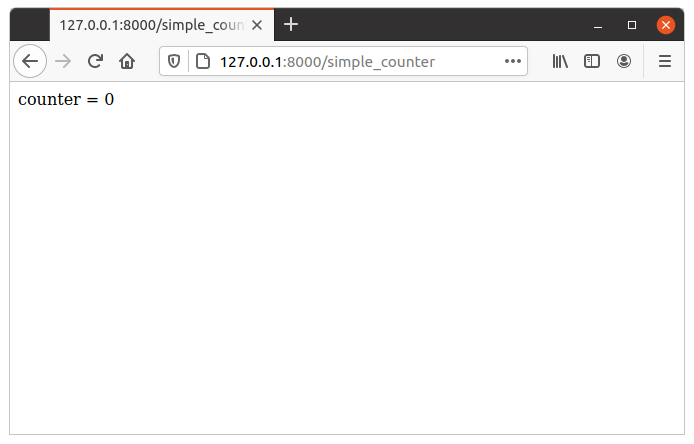

Fixures
Um fixture é definido como “uma peça de equipamento ou de mobiliário, que é fixa em posição num edifício ou veículo”. No nosso caso, um dispositivo elétrico é algo ligado à ação que processa um pedido HTTP, a fim de produzir uma resposta.
When processing any HTTP requests there are some optional operations we may want to perform. For example parse the cookie to look for session information, commit a database transaction, determine the preferred language from the HTTP header and lookup proper internationalization, etc. These operations are optional. Some actions need them and some actions do not. They may also depend on each other. For example, if sessions are stored in the database and our action needs it, we may need to parse the session cookie from the HTTP header, pick up a connection from the database connection pool, and - after the action has been executed - save the session back in the database if data has changed.
PY4WEB fixtures provide a mechanism to specify what an action needs so that py4web can accomplish the required tasks (and skip non required ones) in the most efficient manner. Fixtures make the code efficient and reduce the need for boilerplate code. Think of fixtures as per action (as opposed to per app) middleware.
Fixtures PY4WEB são semelhantes aos middleware WSGI e BottlePy plug-in, exceto que eles se aplicam a ações individuais, não para todos eles, e pode dependem uns dos outros.
PY4WEB comes with some pre-defined fixtures: sessions, url signing and flash messages will be fully explained in this chapter. Database connections, internationalization, authentication, and templates will instead be just outlined here since they have dedicated chapters.
The developer is also free to add fixtures, for example, to handle a third party template language or third party session logic; this is explained later in the Fixtures personalizados paragraph.
Using Fixtures
As we’ve seen in the previous chapter, fixtures are the arguments of the decorator
@action.uses(...). You can specify
multiple fixtures in one decorator or you can have multiple decorators.
Also, fixtures can be applied in groups. For example:
preferred = action.uses(session, auth, T, flash)
Then you can apply all of them at once with:
@action('index')
@preferred
def index():
return dict()
Usually, it’s not important the order you use to specify the fixtures, because py4web knows well how to manage them if they have explicit dependencies. For example auth depends explicitly on db and session and flash, so you do not even needs to list them.
But there is an important exception: the Template fixture must always be the first one. Otherwise, it will not have access to various things it should need from the other fixtures, especially Inject() and Flash() that we’ll see later.
The Template fixture
PY4WEB by default uses the YATL template language and provides a fixture for it.
from py4web import action
from py4web.core import Template
@action('index')
@action.uses(Template('index.html', delimiters='[[ ]]'))
def index():
return dict(message="Hello world")
Note: this example assumes that you created the application from the scaffolding app, so that the template index.html is already created for you.
O objeto template é um dispositivo elétrico. Ele transforma o `` dict () “ retornado pela ação em uma string usando o arquivo template index.html`. Em um capítulo posterior iremos fornecer um exemplo de como definir um fixture personalizado para usar uma linguagem de template diferente, por exemplo Jinja2.
Tenha em conta que uma vez que o uso de templates é muito comum e uma vez que, muito provavelmente, cada ação usa um template diferente, nós fornecemos um pouco de açúcar sintático, e as duas linhas a seguir são equivalentes:
@action.uses('index.html')
@action.uses(Template('index.html', delimiters='[[ ]]'))
Also notice that py4web template files are cached in RAM. The py4web caching object is described later on Caching e Memoize.
Aviso
If you use multiple fixtures, always place the template as the first one.
For example:
@action.uses(session, db, 'index.html') # wrong @action.uses('index.html', session, db) # right
Be careful if you read old documentations that this need was exactly the opposite in early py4web experimental versions (until February 2022)!
As we’ve already seen in the last paragraph, you can combine many fixtures in one decorator. But you can even extend this decorator by passing different templates as needed. For example:
def preferred(template, *optional):
return action.uses(template, session, auth, T, flash, *optional)
And then:
@action('index')
@preferred('index.html')
def index():
return dict()
This syntax has no performance implications: it’s just for avoiding to replicate a decorator logic in multiple places. In this way you’ll have cleaner code and if needed you’ll be able to change it later in one place only.
The Inject fixture
The Inject fixture is used for passing variables (and even python functions) to templates. Here is a simple example:
from py4web.utils.factories import Inject
my_var = "Example variable to be passed to a Template"
...
@action.uses('index.html', Inject(my_var=my_var))
def index():
...
It will be explained later on Using Inject in the YATL chapter.
The Translator fixture
Aqui está um exemplo de uso:
from py4web import action, Translator
import os
T_FOLDER = os.path.join(os.path.dirname(__file__), 'translations')
T = Translator(T_FOLDER)
@action('index')
@action.uses(T)
def index(): return str(T('Hello world'))
The string hello world will be translated based on the
internationalization file in the specified “translations” folder that
best matches the HTTP accept-language header.
Aqui `` Translator`` é uma classe py4web que se estende `` pluralize.Translator`` e também implementa a interface de `` Fixture``.
Podemos facilmente combinar vários Fixtures. Aqui, como exemplo, podemos tornar a acção com um contador que conta “visitas”.
from py4web import action, Session, Translator, DAL
from py4web.utils.dbstore import DBStore
import os
db = DAL('sqlite:memory')
session = Session(storage=DBStore(db))
T_FOLDER = os.path.join(os.path.dirname(__file__), 'translations')
T = Translator(T_FOLDER)
@action('index')
@action.uses(session, T)
def index():
counter = session.get('counter', -1)
counter += 1
session['counter'] = counter
return str(T("You have been here {n} times").format(n=counter))
If the T fixture is to be used from inside a template you may want to pass it to the template:
@action('index')
@action.uses("index.html", session, T)
def index():
return dict(T=T)
Or perhaps inject (same effect as above)
from py4web.utils.factories import Inject
@action('index')
@action.uses("index.html", session, Inject(T=T)
def index():
return dict()
Agora crie o seguinte arquivo de tradução `` traduções / en.json``:
{"You have been here {n} times":
{
"0": "This your first time here",
"1": "You have been here once before",
"2": "You have been here twice before",
"3": "You have been here {n} times",
"6": "You have been here more than 5 times"
}
}
When visiting this site with the browser language preference set to English and reloading multiple times you will get the following messages:
This your first time here
You have been here once before
You have been here twice before
You have been here 3 times
You have been here 4 times
You have been here 5 times
You have been here more than 5 times
Agora tente criar um arquivo chamado `` traduções / it.json`` que contém:
{"You have been here {n} times":
{
"0": "Non ti ho mai visto prima",
"1": "Ti ho gia' visto",
"2": "Ti ho gia' visto 2 volte",
"3": "Ti ho visto {n} volte",
"6": "Ti ho visto piu' di 5 volte"
}
}
Set your browser preference to Italian: now the messages will be automatically translated to Italian.
Notice there is an UI in the Dashboard for creating, updating, and updating translation files.
It can be easily reached via the button i18n+p11n:
that leads to the following interface:
More details can be found here: https://github.com/web2py/pluralize
If you want to force an action to use language defined somewhere else, for example from a session variable, you can do:
@action('index')
@action.uses("index.html", session, T)
def index():
T.select(session.get("lang", "it"))
return dict(T=T)
If you want all of your action to use the same pre-defined language and ignore browser preferences, you have to redefine the select method for the T instance:
T.on_request = lambda *_: T.local.__dict__.update(tag="it", language=T.languages["it"])
This is to be done outside any action and will apply to all actions. Action will still need to declare action.uses(T) else the behavior is undefined.
O fixture flash
It is common to want to display “alerts” to the users. Here we refer to them as flash messages. There is a little more to it than just displaying a message to the view, because flash messages:
can have state that must be preserved after redirection
can be generated both server side and client side
may have a type
should be dismissible
O auxiliar o Flash lida com o lado do servidor deles. Aqui está um exemplo:
from py4web import Flash
flash = Flash()
@action('index')
@action.uses(flash)
def index():
flash.set("Hello World", _class="info", sanitize=True)
return dict()
e no template:
<flash-alerts class="padded" data-alert="[[=globals().get('flash','')]]"></flash-alerts>
By setting the value of the message in the flash helper, a flash
variable is returned by the action and this triggers the JS in the
template to inject the message in the py4web-flash DIV which you
can position at your convenience. Also the optional class is applied to
the injected HTML.
If a page is redirected after a flash is set, the flash is remembered. This is achieved by asking the browser to keep the message temporarily in a one-time cookie. After redirection the message is sent back by the browser to the server and the server sets it again automatically before returning the content, unless it is overwritten by another set.
O cliente também pode definir / adicionar mensagens flash chamando:
Q.flash({'message': 'hello world', 'class': 'info'});
py4web defaults to an alert class called info and most CSS
frameworks define classes for alerts called success, error,
warning, default, and info. Yet, there is nothing in py4web
that hardcodes those names. You can use your own class names.
You can see the basic usage of flash messages in the examples app.
The Session fixture
Simply speaking, a session can be defined as a way to preserve information that is desired to persist throughout the user’s interaction with the web site or web application. In other words, sessions render the stateless HTTP connection a stateful one.
In py4web, the session object is also a fixture. Here is a simple example of its usage to implement a counter.
from py4web import Session, action
session = Session(secret='my secret key')
@action('index')
@action.uses(session)
def index():
counter = session.get('counter', -1)
counter += 1
session['counter'] = counter
return "counter = %i" % counter
The counter will start from 0; its value will be remembered and increased every time you reload the page.
Opening the page in a new browser tab will give you the updated counter value. Closing and reopening the browser, or opening a new private window, will instead restart the counter from 0.
Usually the information is saved in the session object are related
to the user - like its username, preferences, last pages visited,
shopping cart and so on. The session object has the same interface
as a Python dictionary but in py4web sessions are always stored using
JSON (JWT specifically, i.e.
JSON Web Token),
therefore you should only store objects that are JSON serializable.
If the object is not JSON serializable, it will be serialized using
the __str__ operator and some information may be lost.
The information composing the session object can be saved:
client-side, by only using cookies (default)
server-side, but you’ll still need minimal cookies for identifying the clients
Por padrão sessões py4web nunca expiram (a menos que contenham informações de login, mas isso é outra história), mesmo se uma expiração pode ser definido. Outros parâmetros podem ser especificados, bem como:
session = Session(secret='my secret key',
expiration=3600,
algorithm='HS256',
storage=None,
same_site='Lax',
name="{app_name}_sesson")
Here:
secretis the passphrase used to sign the informationexpirationis the maximum lifetime of the session, in seconds (default = None, i.e. no timeout)algorithmis the algorithm to be used for the JWT token signature (“HS256” by default)storageis a parameter that allows to specify an alternate session storage method (for example Redis, or database). If not specified, the default cookie method will be usedsame_siteis an option that prevents CSRF attacks (Cross-Site Request Forgery) and is enabled by default with the “Lax” option. You can read more about it herenameis the format to use for the session cookie name.
If storage is not provided, session is stored in client-side jwt cookie. Otherwise, we have server-side session: the jwt is stored in storage and only its UUID key is stored in the cookie. This is the reason why the secret is not required with server-side sessions.
Server-side session in memcache
Requires memcache installed and configured.
import memcache, time
conn = memcache.Client(['127.0.0.1:11211'], debug=0)
session = Session(storage=conn)
Server-side session in Redis
Requires Redis installed and configured.
import redis
conn = redis.Redis(host='localhost', port=6379)
conn.set = lambda k, v, e, cs=conn.set, ct=conn.ttl: (cs(k, v), e and ct(e))
session = Session(storage=conn)
Aviso: um objecto de armazenamento deve ter `` `` GET`` e métodos set`` e do método set` deve permitir especificar uma expiração. O objecto de ligação redis tem um método ttl` para especificar a expiração, remendo, portanto, que o macaco` método set` ter a assinatura esperada e funcionalidade.
Server-side session in database
from py4web import Session, DAL
from py4web.utils.dbstore import DBStore
db = DAL('sqlite:memory')
session = Session(storage=DBStore(db))
Aviso
the 'sqlite:memory' database used in this example
cannot be used in multiprocess environment;
the quirk is that your application will still work but in non-deterministic
and unsafe mode, since each process/worker will have its own independent
in-memory database.
This is one case when a fixture (session) requires another fixture (db). This is handled automatically by py4web and the following lines are equivalent:
@action.uses(session)
@action.uses(db, session)
Server-side session anywhere
Você pode facilmente armazenar sessões em qualquer lugar que você quer. Tudo que você precisa fazer é fornecer ao objeto `` Session`` um objeto `` storage`` com ambos os `` GET`` e `` métodos set``. Por exemplo, imagine que você deseja armazenar sessões no seu sistema de arquivos local:
import os
import json
class FSStorage:
def __init__(self, folder):
self.folder = folder
def get(self, key):
filename = os.path.join(self.folder, key)
if os.path.exists(filename):
with open(filename) as fp:
return json.load(fp)
return None
def set(self, key, value, expiration=None):
filename = os.path.join(self.folder, key)
with open(filename, 'w') as fp:
json.dump(value, fp)
session = Session(storage=FSStorage('/tmp/sessions'))
We leave to you as an exercise to implement expiration, limit the number of files per folder by using subfolders, and implement file locking. Yet we do not recommend storing sessions on the filesystem: it is inefficient and does not scale well.
The Condition fixture
Sometimes you want to restrict access to an action based on a given condition. For example to enforce a workflow:
@action("step1")
@action.uses(session)
def step1():
session["step_completed"] = 1
button = A("next", _href=URL("step2"))
return locals()
@action("step2")
@action.uses(session, Condition(lambda: session.get("step_completed") == 1))
def step2():
session["step_completed"] = 2
button = A("next", _href=URL("step3"))
return locals()
@action("step3")
@action.uses(session, Condition(lambda: session.get("step_completed") == 2))
def step3():
session["step_completed"] = 3
button = A("next", _href=URL("index"))
return locals()
Notice that the Condition fixtures takes a function as first argument which is called on_request and must evaluate to True or False.
Also notice that in the above example the Condition depends on the Session therefore it must be listed after session in action.uses.
If False, by default, the Condition fixture raises 404. It is possible to specify a different exception:
Condition(cond, exception=HTTP(400))
It is also possible to call a function before the exception is raised, for example, to redirect to another page:
Condition(cond, on_false=lambda: redirect(URL('step1')))
You can use condition to check permissions. For example, if you are giving group memberships to users using Tags (it will be explained later on the Authorization using Tags chapter), then you can require that users action have specific group membership:
groups = Tags(db.auth_user)
@action("payroll")
@action.uses(auth,
Condition(lambda: 'employees' in groups.get(auth.user_id), on_false=lambda: redirect('index')))
def payroll():
return
The URLsigner fixture
A signed URL is a URL that provides limited permission and time to make an HTTP request by containing authentication information in its query string. The typical usage is as follows:
from py4web.utils import URLSigner
# We build a URL signer.
url_signer = URLSigner(session)
@action('/somepath')
@action.uses(url_signer)
def somepath():
# This controller signs a URL.
return dict(signed_url = URL('/anotherpath', signer=url_signer))
@action('/anotherpath')
@action.uses(url_signer.verify())
def anotherpath():
# The signature has been verified.
return dict()
O fixture DAL
Nós já usou o `` dispositivo elétrico DAL`` no contexto das sessões, mas talvez você queira ter acesso direto ao objeto DAL com a finalidade de acessar o banco de dados, e não apenas sessões.
PY4WEB, by default, uses the PyDAL (Python Database Abstraction Layer)
which is documented in the next chapter. Here is an example, please
remember to create the databases folder under your project in case
it doesn’t exist:
from datetime import datetime
from py4web import action, request, DAL, Field
import os
DB_FOLDER = os.path.join(os.path.dirname(__file__), 'databases')
db = DAL('sqlite://storage.db', folder=DB_FOLDER, pool_size=1)
db.define_table('visit_log', Field('client_ip'), Field('timestamp', 'datetime'))
db.commit()
@action('index')
@action.uses(db)
def index():
client_ip = request.environ.get('REMOTE_ADDR')
db.visit_log.insert(client_ip=client_ip, timestamp=datetime.utcnow())
return "Your visit was stored in database"
Notice that the database fixture defines (creates/re-creates) tables
automatically when py4web starts (and every time it reloads this app)
and picks a connection from the connection pool at every HTTP request.
Also each call to the index() action is wrapped into a transaction
and it commits on_success and rolls back on_error.
The Auth fixture
auth and auth.user are both fixtures that depend on
session and db. Their role is to provide the action with
authentication information.
Auth is used as follows:
from py4web import action, redirect, Session, DAL, URL
from py4web.utils.auth import Auth
import os
session = Session(secret='my secret key')
DB_FOLDER = os.path.join(os.path.dirname(__file__), 'databases')
db = DAL('sqlite://storage.db', folder=DB_FOLDER, pool_size=1)
auth = Auth(session, db)
auth.enable()
@action('index')
@action.uses(auth)
def index():
user = auth.get_user() or redirect(URL('auth/login'))
return 'Welcome %s' % user.get('first_name')
O construtor do objeto `` Auth`` define a tabela `` auth_user`` com os seguintes campos: nome de usuário, e-mail, senha, first_name, last_name, sso_id e action_token (os dois últimos são principalmente para uso interno).
If a auth_user table is defined before calling auth.enable()
the provided table will be used.
It is also possible to add extra_fields to the auth_user table,
for example:
extra_fields = [
Field("favorite_color"),
]
auth = Auth(session, db, extra_fields=extra_fields)
In any case, we recommend not to pollute the auth_user table with
extra fields but, instead, to use one of more additional custom
tables that reference users and store the required information.
The auth object exposes the method:auth.enable() which
registers multiple actions including {appname}/auth/login.
It requires the presence of the auth.html template and the
auth value component provided by the
_scaffold app. It also exposes the method:
auth.get_user()
which returns a python dictionary containing the information of the
currently logged in user. If the user is not logged-in, it returns
None and in this case the code of the example redirects to the
auth/login page.
Desde essa verificação é muito comum, py4web fornece um fixture adicional `` auth.user``:
@action('index')
@action.uses(auth.user)
def index():
user = auth.get_user()
return 'Welcome %s' % user.get('first_name')
This fixture automatically redirects to the auth/login page if user
is not logged-in, hence this example is equivalent to the previous one.
The auth fixture is plugin based: it supports multiple plugin
methods including OAuth2 (Google, Facebook, Twitter), PAM and LDAP.
The Authentication and authorization chapter will show you
all the related details.
Caveats about fixtures
Desde fixtures são compartilhados por várias ações que você não tem permissão para alterar seu estado, porque não seria seguro para threads. Há uma exceção a esta regra. As ações podem alterar alguns atributos de campos de banco de dados:
from py4web import action, request, DAL, Field
from py4web.utils.form import Form
import os
DB_FOLDER = os.path.join(os.path.dirname(__file__), 'databases')
db = DAL('sqlite://storage.db', folder=DB_FOLDER, pool_size=1)
db.define_table('thing', Field('name', writable=False))
@action('index')
@action.uses('generic.html', db)
def index():
db.thing.name.writable = True
form = Form(db.thing)
return dict(form=form)
Note that this code will only be able to display a form, to process it after submit, additional code needs to be added, as we will see later on. This example is assuming that you created the application from the scaffolding app, so that a generic.html is already created for you.
A `` readable``, `` writable``, `` default``, `` update``, e atributos `` `` require`` de db. {Tabela}. {Campo} `` são objectos especiais de classe `` ThreadSafeVariable`` definido a `` threadsafevariable`` módulo. Esses objetos são muito parecidos com Python rosca objetos locais, mas eles estão em todos os pedidos utilizando o valor fora da ação especificada inicializado-re. Isto significa que as ações podem mudar com segurança os valores desses atributos.
Fixtures personalizados
Um fixture é um objecto com a seguinte estrutura mínima:
from py4web.core import Fixture
class MyFixture(Fixture):
def on_request(self, context): pass
def on_success(self, context): pass
def on_error(self, context) pass
For example in the DAL fixture case, on_request starts a transaction, on_success commits it, and on_error rolls it back.
In the case of a template, on_request and on_error do nothing but on_success transforms the output.
In the case of auth.user fixtures, on_request does all the work of determining if the user is logged in (from the dependent session fixture) and eventually preventing the request from accessing the inner layers.
Now imagine a request coming in calling an action with three fixtures A, B, and C. Under normal circumstances above methods are executed in this order:
request -> A.on_request -> B.on_request -> C.on_request -> action
response <- A.on_success <- B.on_success <- C.on_success <-
i.e. the first fixture (A) is the first one to call on_request and the last one to call on_success. You can think of them as layers of an onion with the action (user code) at the center. on_success is called when entering a layer from the outside and on_success is called when exiting a layer from the inside (like WSGI middleware).
If any point an exception is raised inner layers are not called and outer layers will call on_error instead of on_success.
Context is a shared object which contains:
content[“fixtures”]: the list of all the fixtures for the action.
context[“processed”]: the list of fixtures that called on_request previously within the request.
context[“exception”]: the exception raised by the action or any previous fixture logic (usually None)
context[“output”]: the action output.
on_success and on_error can see the current context[“exception”] and transform it. They can see the current context[“output”] and transform it as well.
For example here is a fixture that transforms the output text to upper case:
class UpperCase(Fixture):
def on_success(self, context):
context['output'] = context['output'].upper()
upper_case = UpperCase()
@action('index')
@action.uses(upper_case)
def index(): return "hello world"
Notice that this fixture assumes the context[“output”] is a string and therefore it must come before the template.
Here is a fixture that logs exceptions tracebacks to a file:
class LogErrors(Fixture):
def __init__(self, filename):
self.filename = filename
def on_error(self, context):
with open(self.filename, "a") as stream:
stream.write(str(context['exception']) + '\n')
errlog = LogErrors("myerrors.log")
@action('index')
@action.uses(errlog)
def index(): return 1/0
Fixtures also have a __prerequisite__ attribute. If a fixture takes another fixture as an argument, its value must be appended to the list of __prerequisites__. This guarantees that they are always executed in the proper order even if listed in the wrong order. It also makes it optional to declare prerequisite fixtures in action.uses.
For example Auth depends on db, session, and flash. db and session are indeed arguments. flash is a special singleton fixture declared within Auth. This means that
action.uses(auth)
is equivalent to
action.uses(auth, session, db, flash)
Why are fixtures not simply functions that contain a try/except?
We considered the option but there are some special exceptions that should not be considered errors but success (py4web.HTTP, bottle.HTTResponse) while other exceptions are errors. The actual logic can be complicated and individual fixtures do not need to know these details.
They all need to know what the context is and whether they are processing a new request or a response and whether the response is a success or an error. We believe this logic keeps the fixtures easy.
Fixtures should not in general communicate with each other but nothing prevents one fixture to put data in the context and another fixture to retrieve that data.
Multiple fixtures
As previously stated, it’s generally not important the order you use to specify the fixtures but it’s mandatory that you always place the template as the first one. Consider this:
@action("index")
@action.uses(A,B)
def func(): return "Hello world"
Pre-processing (on_request) in the fixtures happen in the sequence they are listed
and then the on_success or on_error methods will be executed in reverse order (as
an onion).
Hence the previous code can be explicitly transformed to:
A.on_request()
B.on_request()
func()
B.on_success()
A.on_success()
So if A.on_success() is a template and B is an inject fixture that allows you to add some extra variables to your templates, then A must come first.
Notice that
@action.uses(A)
@action.uses(B)
is almost equivalent to
@action.uses(A,B)
but not quite. All fixtures declared in one action.uses share the same context while fixtures in different action.uses use different contexts and therefore they cannot communicate with each other. This may change in the future. For now we recommend using a single call to action.uses.
Caching e Memoize
py4web provides a cache in RAM object that implements the last recently used (LRU) algorithm. It can be used to cache any function via a decorator:
import uuid
from py4web import Cache, action
cache = Cache(size=1000)
@action('hello/<name>')
@cache.memoize(expiration=60)
def hello(name):
return "Hello %s your code is %s" % (name, uuid.uuid4())
It will cache (memoize) the return value of the hello function, as
function of the input name, for up to 60 seconds. It will store in
cache the 1000 most recently used values. The data is always stored in
RAM.
The cache object is not a fixture and it should not and cannot be
registered using the @action.uses decorator but we mention it here
because some of the fixtures use this object internally. For example,
template files are cached in RAM to avoid accessing the file system
every time a template needs to be rendered.
Decoradores de conveniência
The _scaffold application, in common.py defines two special
convenience decorators:
@unauthenticated()
def index():
return dict()
e
@authenticated()
def index():
return dict()
They apply all of the decorators below (db, session, T, flash, auth), use a template with the same name as the function (.html), and also register a route with the name of action followed by the number of arguments of the action separated by a slash (/).
@unauthenticated does not require the user to be logged in.
@authenticated required the user to be logged in.
They can be combined with (and precede) other @action.uses(...) but
they should not be combined with @action(...) because they perform
that function automatically.